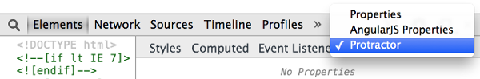
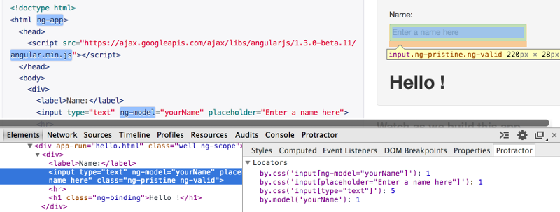

Test protractor selectors from your browser
The extension includes two components:
You can use the popup to enter Protractor selectors or execute commands that you would normally enter in the element explorer.
When you enter a locator starting with by. (e.g.
by.css, by.model, by.binding, etc.)
then it will be executed as a count expression
element.all(<your locator>).count() by the element
explorer.
The developer tools extension tries to find protractor locators for the currently selected item. To open the extension go to Developer tools > Elements and then on the side pane (Styles, Computed, etc.) choose Protractor.
The DevTools extension is limited because you cannot use it in the same browser tab launched by the element explorer. To use the extension you need to open a new tab with the same page for which you want to find locator suggestions. Once the dev tools in the second tab is open then it will provide locator suggestions every time you change the selected element in the elements tab.
When you open the DevTools window, ChromeDriver is automatically disconnected. When ChromeDriver receives a command, if disconnected, it will attempt to close the DevTools window and reconnect. (source).
